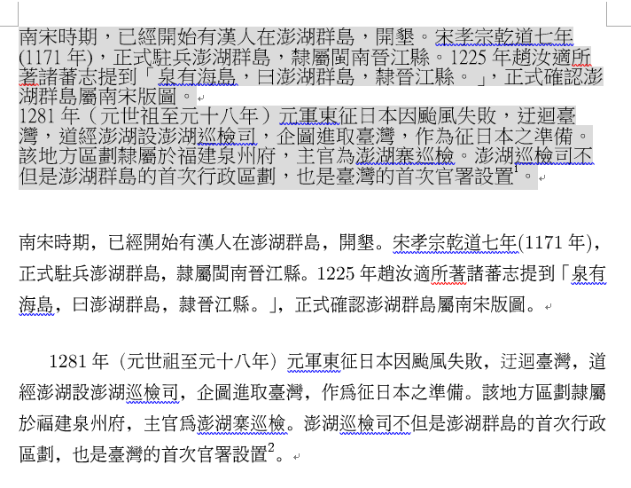

<!doctype html>
<html lang="zh-Hant-TW">

<head>
<meta charset="utf-8">

<title>文件排版與字型選用</title>

<meta name="description" content="Tutorial of web design for primer">
<meta name="author" content="Elvis Hsieh">

<meta name="apple-mobile-web-app-capable" content="yes" />
<meta name="apple-mobile-web-app-status-bar-style" content="black-translucent" />

<meta name="viewport" content="width=device-width, initial-scale=1.0, maximum-scale=1.0, user-scalable=no, minimal-ui">

<link rel="stylesheet" href="/reveal-js/css/reveal.min.css">
<link rel="stylesheet" href="/reveal-js/css/theme/night.min.css" id="theme">
<link rel="stylesheet" href="/css/custom4revealjs.css">
<!-- Code syntax highlighting -->
<link rel="stylesheet" href="/highlight-js/styles/zenburn.min.css">   
<link rel="stylesheet" href="/css/style4font.css">
<!-- Printing and PDF exports -->
<script>
var link = document.createElement( 'link' );
link.rel = 'stylesheet';
link.type = 'text/css';
link.href = window.location.search.match( /reveal-js/print-pdf/gi ) ? '/reveal-js/css/print/pdf.css' : '/reveal-js/css/print/paper.css';
document.getElementsByTagName( 'head' )[0].appendChild( link );
</script>

<!--[if lt IE 9]>
<script src="reveal-js/lib/js/html5shiv.js"></script>
<![endif]-->
</head>
<body>

<div class="reveal">

<!-- Any section element inside of this container is displayed as a slide -->
<div class="slides">
<section>
<section data-markdown><script type="text/template">
## 文件排版：易讀
<a href="./examples/word/typesetting.docx"></a>
</script>
</section>
<section data-markdown><script type="text/template">

#### 原文書籍的排版 (1)
</script>
</section>
<section data-markdown><script type="text/template">

#### 原文書籍的排版 (2)
</script>
</section>
<section data-markdown><script type="text/template">
## 書籍的排版
- 字體的選擇
	* 章、節標題或標題文字與內文文字大小、粗細不同
- 間格距離
	* 章、節標題與段落、行距的間格距離不同, 依序遞減
- 版面配置
	* 奇數頁的右邊界及偶數頁的左邊界略靠書的中央分隔線
	* 上、下邊界留有適當的空白
	* 每章的起始頁都是在奇數頁, 沒有頁碼
- 頁首標題文字
	* 奇數頁是節標題文字, 偶數頁是章標題文字

</script>
</section>
<section data-markdown><script type="text/template">
## 中、英字體的分類


- 中文字體
	* 宋體：細明體、源樣、源流
	* 黑體、圓體：微軟正黑體
	* 標楷體

- 英文字體
	* [Serif](https://fonts.google.com/?category=Serif) (襯線體)
	* [Sans Serif](https://fonts.google.com/?category=Sans+Serif) (無襯線體)
</script>
</section>
<section data-markdown><script type="text/template">
## 英文字體
- serif (襯線體):
	* 特點：<b>易讀</b>
	* 例如： <span style="font-family: 'Times New Roman'">Times New Roman</span>
	* 一般適用在文章的本文, 或者註解的文字
- sans serif (無襯線體):
	* 特點：<b>醒目</b>
	* 例如： <span style="font-family: Roboto">Google Roboto</span>
	* 一般是用在文章的章節標題, 或者廣告看板等
</script>
</section>
<section data-markdown><script type="text/template">
## 中文字體
- 明體 (宋體、正體):
* 特點：<b>易讀</b>
* 例如： <span style="font-family: 'Times New Roman'">cwTeX Ming (吳聰敏老師開發的字體)</span>
* 一般適用在文章的本文，或者註解的文字
- 黑體、圓體:
* 特點：<b>醒目</b>
* 例如： <span style="font-family: cwTeXHei">cwTeX Hei (黑體)</span>
* 一般是用在文章的章節標題，或者廣告看板等
</script>
</section>
<section data-markdown><script type="text/template">
## <span style="font-family: '標楷體'">字體的選用</span>
- 文章的本文、註解：
	* 中文字體選擇明體 (或宋體、正體)
	* 英文字體選擇 serif (襯線體)
	* 不建議使用 <span style="font-family: '標楷體'">標楷體</span>、黑體、圓體
	* Microsoft Windows 新細明體品質不佳, 建議採用[「吳聰敏老師開發的字體 (cwTeX)」](https://github.com/l10n-tw/cwtex-q-fonts), 特別是標點符號的位置
- 章節標題或標題文字：
	* 中文字體選擇黑體或圓體
	* 英文字體選擇 sans serif (無襯線體)
	* 不建議使用 <span style="font-family: '新細明體'">新細明體, 明體</span>
</script>
</section>
<section data-markdown><script type="text/template">
## 中、英文字體一致
- 中文文稿內若有英文與阿拉伯數字，請選用同類型字體

	<b>X</b> <span style="font-family: cwTeXMing">吳聰敏老師開發的</span> cwTeX font <span style="font-family: cwTeXMing">字體</span>
	  (中文是明體，英文卻是 sans-serif)

	O <span style="font-family: 'Times New Roman'; cwTeXMing">吳聰敏老師開發的 cwTeX font 字體</span> 
	  (中文是明體，英文是 serif)

	<b>X</b> 英文字體選擇 <span style="font-family: 'Times New Roman'">serif</span> (襯線體)
	  (中文是圓體，英文卻是 serif)

	O 英文字體選擇 sans-serif (無襯線體)
	  (中文是圓體，英文是 sans-serif)
</script>
</section>
</section>
<section>
<section data-markdown><script type="text/template">
# 排版的小細節
</script>
</section>
<section data-markdown><script type="text/template">
## 標點符號功能
- 逗點： 
	* 用於隔開複句內各分句, 或標示句子內語氣的停頓。
	* 停頓的較短
- 句點： 
	* 用於一個語義完整的句末，不用於疑問句、感嘆句。
	* 停頓的較長
- 分號： 用於分開複句中平列的句子。
- 標點符號不應該出現在一行之首, 就是所謂「避頭點」
	* ，前面不應該出現標點符號
	* 會影響閱讀的順暢性
	* 如何改正？增、刪文字
</script>
</section>
<section data-markdown><script type="text/template">
## 標點符號的位置
- 標點符號居中？還是「下標」的位置
- 註解編號不對, 應在標點符號的後面


</script>
</section>
<section data-markdown><script type="text/template">
## 中文文稿的數字編號
- 圖、表編號
	* 「表一」, 應為<a href="./examples/word/typesetting.docx">「表 1」</a>
	* 「圖一」, 應為<a href="./examples/word/typesetting.docx">「圖 1」</a>

- 日期寫法
	* 「二O一八年十月八日」, 應寫成「2018 年 10 月 8 日」

- 章節編號
	* 「第一章第二節第三小節」, 應寫成「第 1 章第 2.3 節」
</script>
</section>
<section data-markdown><script type="text/template">
## 文字間距
- 中文字與英文字中間應有一個空格

  <b>X</b> 吳聰敏老師開發的cwTeX font字體

  O 吳聰敏老師開發的 cwTeX font 字體

- 左括號之前應有一個空格, 右括號之後除了接標點符號外, 應有一個空格

	<b>X</b> 襯線體(serif),無襯線體(sans-serif)

	O 襯線體 (serif), 無襯線體 (sans-serif)

</script>
</section>
<section data-markdown><script type="text/template">
## 版面配置與段落間距
- A4 紙張邊界應留有適當的空白, 建議四周邊界至少留 2.54 cm 的空白
- 「行距」與「段落間距」大小有別
	* 行距較小, 段落間距較大
- 一致的格式
	* 文稿的行距、段落間距應保持一致
	* 章節標題與圖、表說明文字選用的字體與大小都應相同
	* 表在上：表編號 (表 1) 在表的上方
	* 圖在下：圖編號 (圖 1) 在圖的下方
</script>
</section>
</section>

</div>
</div>
<script src="/reveal-js/lib/js/head.min.js"></script>
<script src="/reveal-js/js/reveal.min.js"></script>

<script>

Reveal.initialize({
controls: false,
progress: true,
history: false,
center: true,
slideNumber: true,

transition: 'slide', // none/fade/slide/convex/concave/zoom

	menu: {
		side: 'left',
		width: 'normal',
		numbers: false,
		titleSelector: 'h1, h2, h3, h4, h5, h6',
		useTextContentForMissingTitles: false,
		hideMissingTitles: false,
		markers: true,
		custom: true,
		themes: true,
		themesPath: '/reveal-js/css/theme/',
		transitions: true,
		openButton: true,
		openSlideNumber: false,
		keyboard: true,
		sticky: false,
		autoOpen: true,
		delayInit: false,
		openOnInit: false,
        loadIcons: true,
        
        custom: [
				{ title: 'TOC', icon: '<i class="fa fa-external-link-alt">', src: 'links.html' },
				{ title: 'About', icon: '<i class="fa fa-info">', content: '<p>Slides for teaching Office Suite Software</p>' }
		]
	},

customcontrols: { 
		slideNumberCSS : 'position: fixed; display: block; right: 90px; top: auto; left: auto; width: 50px; bottom: 30px; z-index: 31; font-family: Helvetica, sans-serif; font-size:  12px; line-height: 1; padding: 5px; text-align: center; border-radius: 10px; background-color: rgba(128,128,128,.5);', 
		controls: [ 
			{ icon: '<i class="fa fa-caret-left"></i>', 
			  css: 'position: fixed; right: 60px; bottom: 30px; z-index: 30; font-size: 24px;', 
			  action: 'Reveal.prev(); return false;' 
			}, 
			{ icon: '<i class="fa fa-caret-right"></i>', 
			  css: 'position: fixed; right: 30px; bottom: 30px; z-index: 30; font-size: 24px;', 
			  action: 'Reveal.next(); return false;' 
			}
		] 
	},
	toolbar: {
		// Specifies where the toolbar will be shown: 'top' or 'bottom'
		position: 'bottom',

		// Add button to toggle fullscreen mode for the presentation
		fullscreen: true,

		// Add button to toggle the overview mode on and off
		overview: true,

		// Add button to pause (hide) the presentation display
		pause: true,

		// Add button to show the speaker notes
		notes: false,

		// Add button to show the help overlay
		help: false,

		// If true, the reveal.js-menu will be moved into the toolbar.
		// Set to false to leave the menu on its own.
		captureMenu: true,

		// If true, the playback control will be moved into the toolbar.
		// This is only relevant if the presentation is configured to autoSlide.
		// Set to false to leave the menu on its own.
		capturePlaybackControl: true,

		// By default the menu will load it's own font-awesome library
		// icons. If your presentation needs to load a different
		// font-awesome library the 'loadIcons' option can be set to false
		// and the menu will not attempt to load the font-awesome library.
		loadIcons: true
	},

// Optional reveal.js plugins
dependencies: [
{ src: '/reveal-js/lib/js/classList.js', condition: function() { return !document.body.classList; } },
{ src: '/reveal-js/plugin/markdown/marked.js', condition: function() { return !!document.querySelector( '[data-markdown]' ); } },
{ src: '/reveal-js/plugin/markdown/markdown.js', condition: function() { return !!document.querySelector( '[data-markdown]' ); } },
{ src: '/reveal-js/plugin/highlight/highlight.js', async: true, condition: function() { return !!document.querySelector( 'pre code' ); }, callback: function() { hljs.initHighlightingOnLoad(); } },
{ src: '/reveal-js/plugin/zoom-js/zoom.js', async: true },
{ src: '/reveal-js/plugin/notes/notes.js', async: true },
{ src: '/reveal-js/plugin/customcontrols/customcontrols.js', async: true },
//{ src: '/reveal-js/plugin/chalkboard/chalkboard.js', async: true },
{ src: '/reveal-js/plugin/fullscreen/fullscreen.js', async: true },
{ src: '/reveal-js/plugin/chart/Chart.min.js', async: true },
{ src: '/reveal-js/plugin/anything/anything.js', async: true },
{ src: '/reveal-js/plugin/menu/menu.js', async: true},
{ src: '/math-katex/math-katex.js', async: true },
{ src: '/reveal-js/plugin/line-numbers/line-numbers.js'},
{ src: '/reveal-js/plugin/toolbar/toolbar.js' }
]
});

</script>

</body>
</html>
